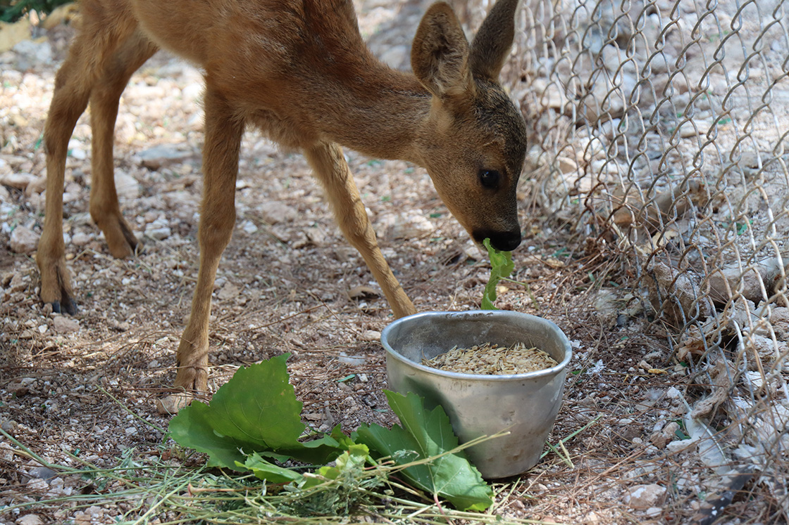

Karaca, Avrupa, Kafkasya ve Anadolu’nun ormanlık ve dağlık bölgelerinde yaşayan, zarif yapılı ve çevik hareketleriyle tanınan küçük bir geyik türüdür; kahverengi kürkü mevsime göre açık veya koyu tonlara bürünür, erkekleri kısa ve üç çatallı boynuzlara sahipken dişiler boynuzsuzdur; ortalama 10–12 yıl yaşar ve 30 kg’a kadar ağırlığa ulaşabilir; sürüler yerine genellikle tek başına veya küçük gruplar halinde dolaşır, otçul beslenir ve özellikle genç sürgünler ile yaprakları tercih eder; Türkiye’de Karadeniz, İç Anadolu ve Doğu Anadolu’nun ormanlık alanlarında doğal yayılış gösterir, avlanma ve habitat kaybı nedeniyle sayıları azalmış olsa da koruma altına alınarak popülasyonları desteklenmektedir; kültürel açıdan ise Anadolu’da zarafet, özgürlük ve doğayla uyumun sembolü olarak görülür.